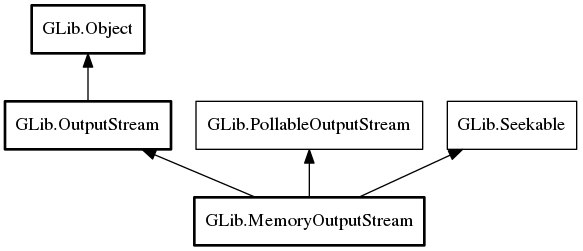

MemoryOutputStream
Object Hierarchy:

Description:
MemoryOutputStream is a class for using arbitrary memory chunks as output for GIO streaming output operations.
As of GLib 2.34, MemoryOutputStream trivially implements
PollableOutputStream: it always polls as ready.
Content:
Properties:
- public void* data { construct; get; }
Pointer to buffer where data will be written.
- public ulong data_size { get; }
Size of data written to the buffer.
- public DestroyNotify? destroy_function { construct; get; }
Function called with the buffer as argument when the stream is
destroyed.
- public ReallocFunc? realloc_function { construct; get; }
Function with realloc semantics called to enlarge the buffer.
- public ulong size { construct; get; }
Current size of the data buffer.
Creation methods:
Methods:
- public unowned uint8[] get_data ()
Gets any loaded data from the this.
- public size_t get_data_size ()
Returns the number of bytes from the start up to including the last
byte written in the stream that has not been truncated away.
- public size_t get_size ()
Gets the size of the currently allocated data area (available from
get_data).
- public Bytes steal_as_bytes ()
Returns data from the this as a
Bytes.
- public uint8[] steal_data ()
Gets any loaded data from the this.
Inherited Members:
All known members inherited from class GLib.OutputStream
All known members inherited from class GLib.Object
All known members inherited from interface GLib.PollableOutputStream
All known members inherited from interface GLib.Seekable